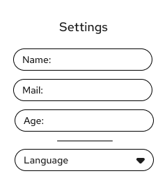
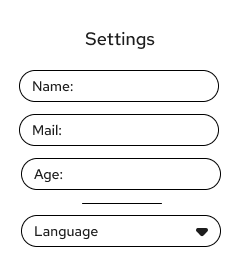

Behavioural Design
This section demonstrates how interactive components support usability and accessibility. Through thoughtful navigation patterns, clear iconography, and intuitive interfaces, we ensure mental health resources remain accessible and easy to use for all visitors.
Icon Set
Icons enhance comprehension throughout the interface, appearing in buttons, navigation, and information displays. Each icon maintains consistent sizing, stroke weight, and visual style to create a cohesive system.
Core Icon Collection
Icon Design Specifications
- Base size: 24×24px with 2px stroke weight for optimal clarity
- Uniform visual style: Outline icons with rounded corners
- Interactive icons feature hover states
- All icons meet WCAG accessibility standards through semantic labeling and sufficient color contrast
Card Components
Card components organize and present information in digestible, scannable formats. Each card type serves a specific purpose—from displaying community discussions to showcasing resources and collecting user feedback.


 

Card Design System
- Consistent corner radius: 12px across all card types
- Shadow specifications: 0 4px 16px rgba(0,0,0,0.08)
- Padding standards: 24px internal padding for content cards
- Responsive behavior: Cards adapt to container width
Key Elements
These essential components prioritize both accessibility and user privacy. Design decisions reflect our commitment to protecting user data while maintaining the highest standards of usability.
Search Component
The search component provides intuitive input with clear visual hierarchy and immediate feedback:

Privacy Controls
This platform respects user privacy by design. We do not passively collect personal data, and all privacy settings default to maximum protection, giving users complete control over their information.